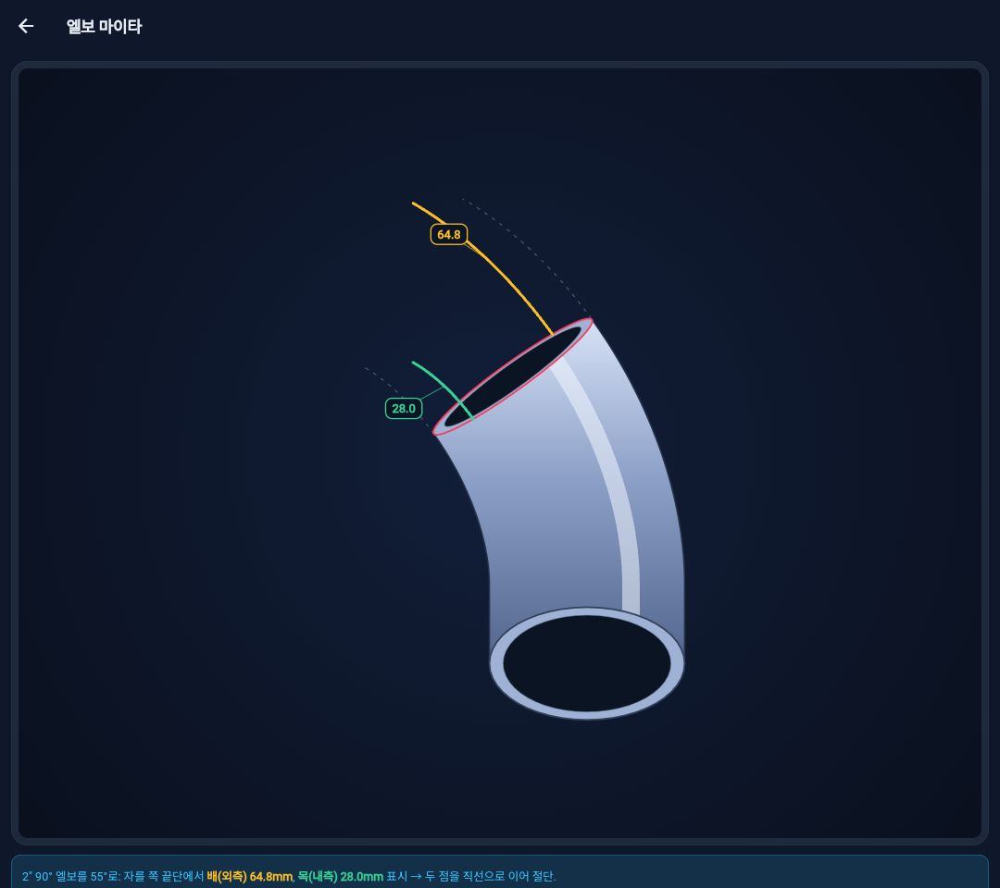

배관 계산 · 현장 배관 ISO 계산기 사용법
엘보 마이타 계산 방법
엘보 마이타 또는 마이터 절단을 검토할 때는 목표 각도뿐 아니라 배와 목의 측정 위치, 남길 부분과 제거할 부분을 함께 확인해야 합니다. 현장 배관 ISO 계산기의 엘보 마이타 화면 사용 순서입니다.
코리아피터 · 2026년 11월 11일 작성
엘보의 배와 목은 어느 쪽인가요?
배는 엘보 곡선의 외측, 목은 내측을 뜻합니다. 같은 각도를 기준으로 보더라도 곡선의 반지름이 달라 표면을 따라 잰 길이가 다릅니다. 배에서 확인한 치수를 목에 그대로 적용하지 않습니다.
앱은 엘보 형상과 배·목 치수를 함께 보여 줍니다. 계산 결과의 숫자를 보기 전에 화면에서 기준 위치와 선택한 절단 조건을 확인하세요.
규격·엘보 종류·목표 각도를 입력하는 순서
- 앱의 엘보 마이타 계산 화면을 엽니다.
- 사용할 배관 사이즈를 선택합니다.
- 롱엘보·숏엘보 등 실제 자재에 맞는 반지름 조건을 선택합니다.
- 시작 엘보 각도와 목표 각도를 확인합니다. 목표 각도는 시작 엘보보다 작아야 합니다.
- 계산을 실행하고 화면의 배(외측)·목(내측) 치수와 가공 기준을 확인합니다.
앱에서 숏엘보 치수를 제공하지 않는 작은 규격은 롱엘보 기준만 사용할 수 있습니다. 사용할 수 없는 조합을 임의로 다른 규격으로 대체해 계산하지 마세요.
남기는 각도와 잘라내는 각도를 구분합니다
90° 엘보에서 60°를 남기는 경우, 제거하는 각도는 30°입니다. 여기서 목표 각도 60°와 제거 각도 30°를 혼동하면 절단 위치를 잘못 잡을 수 있습니다.
배·목 표면의 호길이, 중심선 반지름, 센터에서 끝까지의 치수는 서로 다른 값입니다. 앱 도해에서 무엇을 측정하는 숫자인지 확인하고 자재에 표시합니다.
롱엘보와 숏엘보는 같은 계산 결과가 나오나요?
같은 배관 사이즈와 각도라도 엘보의 반지름 조건이 다르면 호길이와 센터 치수가 달라집니다. 먼저 실제 자재의 종류를 확인하고 계산 조건을 맞춥니다.
기성 45°·90° 엘보의 치수표를 적용하는 경우와 기존 엘보를 목표 각도로 가공하는 경우도 구분해야 합니다. 가공한 엘보의 값을 기성품 치수와 무조건 같다고 보지 않습니다.
엘보 사이의 직관 길이가 필요하다면
엘보 마이타는 엘보 자체의 절단 조건을 확인하는 기능입니다. 두 엘보 사이의 파이프 절단 길이는 센터 거리와 엘보 공제를 반영해 별도로 계산합니다.
45도·롤링 옵셋 계산 방법에서 배관 형상에 맞는 화면을 선택하고, CL과 CUT의 차이도 함께 확인하세요. 실제 제작 전에는 자재 카탈로그와 현장 가공 기준을 대조합니다.
